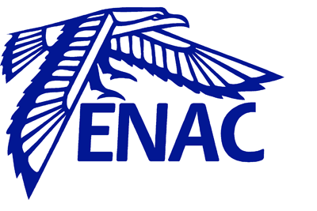

Challenge Sécurité TutorielUne enquête palpitante
Afin de vous faire découvrir l'univers de la sécurité informatique, nous vous proposons quelques execices pratiques organisés sous forme d'enquête policière. L'enquête se déroule en quatre phases successives (challenges 1 à 4). Chaque phase aborde une ou plusieurs thématiques de la sécurité. Bien que l'idéal soit de commencer avec le challenge 1 pour terminer avec le challenge 4, toutes les phases sont indépendantes.Tous les documents nécessaires à la compréhension et à la réalisation de l'étapeX sont réunis dans le dossier challengeX. Pour chaque challenge vous trouverez : un énoncé du challenge, une note technique expliquant les principes utiles au challenge, une page d'indices pour aiguiller et éventuellement débloquer votre progression et enfin les documents (codes, archives ...) propres à l'épreuve.
Bonne chance !En cas de problème (fausse manip...) ou à l'arrivée d'un nouveau joueur, penser à éteindre, restaurer puis redémarrer les machines virtuelles !
Challenge 1 : Un premier indice
- Niveau de difficulté
- Moyen
- Temps Estimé
- 20 minutes
- Descriptif
- Ce premier challenge abordera des notions simples de stéganographie et une méthode historique de chiffrement au travers d'une énigme. Le joueur devra repérer et utiliser différents indices dissimulés dans un faux menu de restaurant afin de récupérer une adresse email.
- Connaissances requises
- Ligne de commande
Challenge 2 : L'enquête avance
- Niveau de difficulté
- Facile
- Temps Estimé
- 10 minutes
- Descriptif
- Pour cette seconde épreuve le joueur devra parcourir une boite mail afin de découvirir l'adresse d'un lieu de rendez-vous. Brute force de mots de passe et stéganographie au programme !
- Connaissances requises
- Ligne de commande
Challenge 3 : La planque
- Niveau de difficulté
- Moyen
- Temps Estimé
- 15 minutes
- Descriptif
- Dans cette étape le réseau est à l'honneur ! Le joueur va en effet devoir réaliser une attaque Man In The Middle afin d'intercepter des identifiants de connexion échangées via HTTPS.
- Connaissances requises
- Wireshark - iptables - Réseaux TCP/IP
Challenge 4 : Forensic
- Niveau de difficulté
- Difficile
- Temps Estimé
- 20 minutes
- Descriptif
- Dans l'épreuve finale sortez vos gants en latex et votre plus belle blouse blanche ! Le joueur doit retrouver des documents effacés sur des supports de stockage USB et les faire parler.
- Connaissances requises
- Ligne de commande
A propos
ContexteL'ensemble des challenges proposés ont été imaginés et construits par Damien CASSU et Laura GRABOT dans le cadre de leur projet long clôturant leur dernière année d'école d'ingénieur (INSA Toulouse / TLS-SEC). Ces challenges ont pour but de présenter et promouvoir la sécurité informatique de manière ludique auprès des visiteurs de la Toulouse Hacking Convention du 3 Mars 2017.L'ensemble des documents proposés (hors machines virtuelles) peut être récupérés sur GitHub.
La formation TLS-SECTLS-SEC (pour Toulouse-Sécurité) est une formation en sécurité des systèmes d'information du groupement d'écoles d'ingénieurs Toulouse Ingénierie. Elle est plus spécifiquement portée par l'INP Toulouse, l'INSA Toulouse et l'ENAC.TLS-SEC remplace et valide la dernière année des écoles d'ingénieurs partenaires. Ainsi les étudiants de ces écoles peuvent suivre TLS-SEC à la place de leur dernière année d'école d'ingénieur et obtenir le diplôme de leur école d'origine. Plus d'informations (programmes de cours...) peuvent être obtenues sur la page officielle de la formation.

